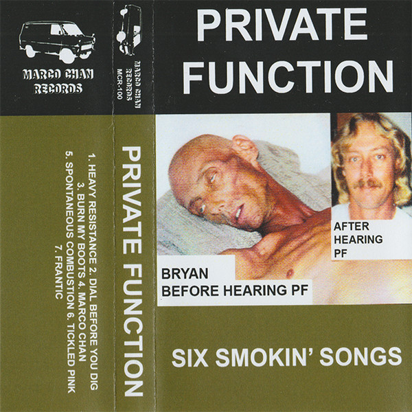

Home
Six Smokin' Songs

4. Marco Chan
5. Spontaneous Combustion
6. Tickled Pink
7. Frantic
Released: 8th December 2016
Format: Cassette
Label: Marco Chan Records
Private Function's first EP recorded, mixed and mastered by Adam Ritchie at Pissfart HQ in August 2016. They Released a limited release on cassette tape limited to 100 copies on their own label Marco Chan Records (MCR-100)